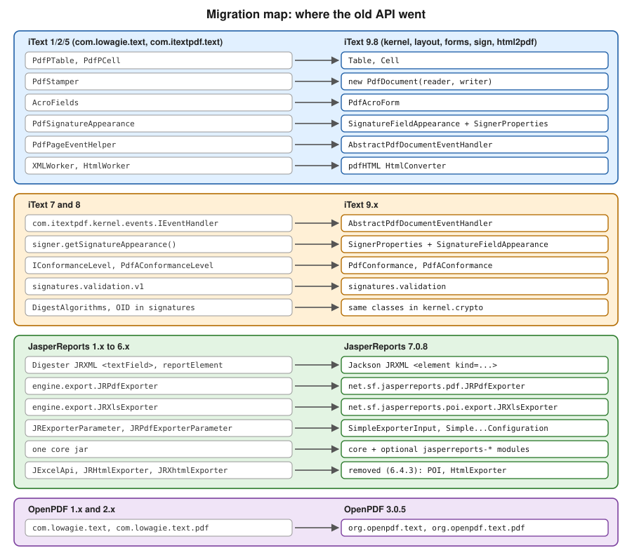

What’s Changed & Migration
|
This content was generated with the assistance of AI and should be verified against the official documentation before being relied on in production. |
Most of what is written about PDF generation in Java is old. The three books consulted for this section date from the iText 1/2 and JasperReports 1.x to 3.x era, and answers on the web still show their code. This page collects every point where that older material no longer holds, the 28 findings that the other pages of this section refer to as O1 to O28, and gives for each one the old API, the current replacement and the page that explains the replacement in depth. Two findings are covered only here and get a full explanation: the JRXML format change of JasperReports 7 (O15) and the removal of the JExcelApi exporter and the HTML image spacers (O21). The page then turns the findings into working migration material: a class map from iText 2 and 5 to iText 9 with before and after code, the breaking changes between iText 7, 8 and 9, the move from JasperReports 6 to 7, and the package rename of OpenPDF 3.
Versions are stated as of 2026-10-09: iText Core 9.8.0, pdfHTML 6.3.4, JasperReports 7.0.8, OpenPDF 3.0.5 (the latest on Maven Central) and Java 21. The Java snippets were compiled, and where it was possible run, against these versions and against the old libraries they replace: iText 5.5.13.4 and pdfHTML’s predecessor XMLWorker 5.5.13.4, OpenPDF 1.4.2 and JasperReports 6.21.3 for the "before" code. The two signing snippets need a key and a certificate chain and were compiled but not run, and the 8 to 9 snippets that come from the iText knowledge base are marked as such. iText is licensed under the AGPLv3 or under a commercial licence, as the Introduction & Approaches page of this section explains.
The migration map
The figure shows where each old API went. Each row is one rename or replacement, and the sections below give the code.

A migration is never a search and replace. iText 5 to 9 is a rewrite of the object model, JasperReports 6 to 7 changes the file format of every template, and only OpenPDF 3 is mostly mechanical. Decide first which of these paths applies to you:
-
Code written with
com.lowagie.textorcom.itextpdf.text(iText 2, iText 5) that you want to keep on a permissive licence: move the imports to OpenPDF 3 (org.openpdf), which keeps the old document model. -
The same code, if the AGPLv3 or a commercial iText licence is acceptable: rewrite it against iText 9, using the class map below.
-
iText 7 or 8 code: stay on the iText line and apply the iText 9 breaking changes.
-
JasperReports templates and code from before 7.0: convert the templates with Jaspersoft Studio 7 and change the dependencies and imports.
The 28 outdated findings
Each row names the outdated content of the books, the current approach, and the page of this section with the details. A sentence follows each group, and the findings that need more than a row (O1, O15 and O21) are explained after the tables.
iText and the first book (O1 to O14)
| # | Old API (book content) | Current approach | Covered in |
|---|---|---|---|
O1 |
|
iText 7 and later are a rewrite split into |
iText Architecture & Modules, and this page |
O2 |
|
The chain is |
|
O3 |
|
Stamping mode, |
|
O4 |
RC4 40-bit and 128-bit encryption. |
AES-256 with |
|
O5 |
|
The layout |
|
O6 |
|
The |
|
O7 |
|
Not part of the iText 7 and later core. Use the |
|
O8 |
|
pdfHTML and its |
|
O9 |
|
|
|
O10 |
|
|
|
O11 |
|
|
|
O12 |
Servlet and JSP output, workarounds for the MSIE content type. |
Spring Boot with |
|
O13 |
The claim that iText does not extract text. |
|
|
O14 |
|
|
Two of these rows hide a licensing point. The package com.lowagie.text is the iText 1 and 2 code base, which was
published under the MPL and the LGPL, and a book that shows it is not showing code you can take over into an iText 9
project: iText 9 is a different library under a different licence. If the open licence is the requirement, the supported
route for that API is OpenPDF, as described in the last section of this page.
JasperReports and the second and third book (O15 to O27)
| # | Old API (book content) | Current approach | Covered in |
|---|---|---|---|
O15 |
The JRXML document type definition, |
XSD from JasperReports 3.x, and since 7.0 a Jackson XML format without a namespace, where every element is |
JRXML Design, and this page |
O16 |
The |
|
|
O17 |
|
The |
Expressions, Parameters, Fields & Variables, Large Reports & Performance |
O18 |
|
Styles, font extensions (the artifact |
|
O19 |
|
|
|
O20 |
|
|
|
O21 |
The JExcelApi exporter, and the spacer images of the HTML export. |
Removed in 6.4.3. Use the POI exporter or FastExcel, and the HTML resource handlers. Explained on this page. |
This page |
O22 |
PDF export through iText 1.x and 2.1.7. |
OpenPDF, in the artifact |
|
O23 |
The applet viewer, |
The official Spring Boot sample, a REST controller, on JDK 17 or later. |
|
O24 |
|
The Jakarta modules by default, with |
|
O25 |
JFreeChart 1.0.0 and 3D charts. |
The optional artifact |
|
O26 |
|
|
|
O27 |
No mention of PDF/A, tagging, form fields or signing. |
PDF/A-1 to 3 ( |
PDF Exporter Configuration, Editable Forms with JasperReports & PDFBox, Signing with PDFBox & EU DSS |
Two details in this group were checked against the project’s own sources. The 7.0.0 change log of JasperReports says that
JFreeChart was upgraded to 1.5.4, but the POM of the jasperreports-charts artifact of 7.0.8 declares JFreeChart 1.5.6,
so a text that says 1.5.4 describes 7.0.0. Second, the 7.0.8 change log says that the tagging code, which the PDF/UA and
PDF/A output depends on, was moved out of the Community edition into the Professional extensions, and the exporter
configuration page of this section explains how to detect that.
O1: iText 1/2, iText 5 and the licence
The first outdated point is also the one with the largest consequence. The books teach the package com.lowagie.text,
the iText 1 and 2 code base, which was licensed under the MPL and the LGPL and could be embedded in closed-source
products. iText 5 moved to com.itextpdf.text and, like every later version, is licensed under the AGPLv3 or commercially, and iText 5 is end of life,
so any tutorial that shows PdfPTable or PdfStamper also describes a library that no longer receives fixes. iText 7 and
later (the current line is iText 9) are a rewrite with a different object model, divided into the modules kernel,
io, layout, forms, sign, pdfa, pdfua and others, and are available under the AGPLv3 or under a commercial
licence. The AGPLv3 has obligations for software that users reach over a network, so a service that embeds iText 9 either meets
them or buys a commercial licence: the Introduction & Approaches page of this section explains the consequences, and this
page does not give legal advice.
OpenPDF is the community fork that continued from the old LGPL and MPL code. It keeps the document model of the books
(Document, Paragraph, PdfPTable, PdfWriter.getInstance) and is dual-licensed under the LGPL 2.1 and the MPL 2.0.
Its version 3.0 renames the packages from com.lowagie to org.openpdf, as described in the section on the rename
below. The choice between the two is licence, not capability alone, and the Introduction & Approaches page of this
section compares them.
iText 2 and 5 to iText 9: the class map
The table maps each class that the books and the iText 5 tutorials use to its iText 9 counterpart. A single row is not a drop-in replacement: the new class usually has a different construction and a different lifecycle, and the code below the table shows the six most common cases side by side.
| iText 2 and 5 | iText 9 | Notes |
|---|---|---|
|
|
Three objects instead of two. The layout |
|
|
Cells hold block elements. Widths are |
|
|
Stamping mode. Draw with |
|
|
|
|
|
Fields are |
|
|
Since iText 8.0. |
|
|
Appearance is a layout element. |
|
|
The PAdES signer sets the sub-filter and the baseline level for you. |
|
|
Registered on the |
|
Event handlers, |
There is no header or footer object. |
|
|
Embedding and subsetting are arguments of the factory. |
|
pdfHTML |
A separate add-on, |
|
|
Same names, but extraction takes a |
|
|
Moved to the |
The Maven coordinates change as well. iText 5 is one jar, com.itextpdf:itextpdf:5.5.13.4, with XMLWorker as
com.itextpdf.tool:xmlworker:5.5.13.4. iText 9 is the aggregator POM com.itextpdf:itext-core:9.8.0 (declared with
<type>pom</type>), the cryptography adapter com.itextpdf:bouncy-castle-adapter:9.8.0 for anything that signs or
encrypts, and com.itextpdf:html2pdf:6.3.4 for HTML. The iText knowledge base describes the same split in its
migration guide from iText 5 to iText 7: iText 7
is a complete redesign of iText 5 with the same functionality, a new rendering framework, and more separation between the
high-level document model and the low-level PDF operators, it is split into independent parts so that an application loads
only what it uses, and pdfHTML is the successor of XMLWorker. The guide also lists the logging dependency change, from none
for iText 5 to logback 1.1.3 for Java, and the license key mechanism that was reworked.
Tables: PdfPTable to Table
Before, with iText 5.5.13.4 (the imports of com.itextpdf.text and com.itextpdf.text.pdf):
import com.itextpdf.text.Document;
import com.itextpdf.text.DocumentException;
import com.itextpdf.text.PageSize;
import com.itextpdf.text.Phrase;
import com.itextpdf.text.pdf.PdfPCell;
import com.itextpdf.text.pdf.PdfPTable;
import com.itextpdf.text.pdf.PdfWriter;
import java.io.OutputStream;
static void invoice(OutputStream out) throws DocumentException {
Document document = new Document(PageSize.A4);
PdfWriter writer = PdfWriter.getInstance(document, out);
document.open();
PdfPTable table = new PdfPTable(new float[] {4, 1, 2});
table.setWidthPercentage(100);
table.addCell(new PdfPCell(new Phrase("Title")));
table.addCell(new PdfPCell(new Phrase("Qty")));
table.addCell(new PdfPCell(new Phrase("Amount")));
document.add(table);
document.close();
}After, with iText Core 9.8.0. The Document now wraps a PdfDocument, column widths are UnitValue percentages, and
the table uses the full width of the area it is placed in:
import com.itextpdf.kernel.geom.PageSize;
import com.itextpdf.kernel.pdf.PdfDocument;
import com.itextpdf.kernel.pdf.PdfWriter;
import com.itextpdf.layout.Document;
import com.itextpdf.layout.element.Table;
import com.itextpdf.layout.properties.UnitValue;
import java.io.OutputStream;
static void invoice(OutputStream out) {
PdfDocument pdf = new PdfDocument(new PdfWriter(out));
try (Document document = new Document(pdf, PageSize.A4)) {
Table table = new Table(UnitValue.createPercentArray(new float[] {4, 1, 2})).useAllAvailableWidth();
table.addCell("Title");
table.addCell("Qty");
table.addCell("Amount");
document.add(table);
}
}The new version is derived from the iText knowledge base page on
tables and the Table API. The
Tables page of this section covers headers, footers, spans and large tables.
Page events: PdfPageEventHelper to AbstractPdfDocumentEventHandler
Before, in iText 5 a helper class is attached to the writer and receives the writer and the document:
import com.itextpdf.text.Document;
import com.itextpdf.text.Element;
import com.itextpdf.text.Phrase;
import com.itextpdf.text.pdf.ColumnText;
import com.itextpdf.text.pdf.PdfPageEventHelper;
import com.itextpdf.text.pdf.PdfWriter;
static class Footer extends PdfPageEventHelper {
@Override
public void onEndPage(PdfWriter writer, Document document) {
ColumnText.showTextAligned(writer.getDirectContent(), Element.ALIGN_CENTER,
new Phrase("Page " + writer.getPageNumber()),
(document.right() + document.left()) / 2, document.bottom() - 18, 0);
}
}
// registered with: writer.setPageEvent(new Footer());After, in iText 9 the handler extends AbstractPdfDocumentEventHandler, implements the single method onAcceptedEvent
and is registered on the PdfDocument for an event type:
import com.itextpdf.kernel.geom.Rectangle;
import com.itextpdf.kernel.pdf.PdfPage;
import com.itextpdf.kernel.pdf.canvas.PdfCanvas;
import com.itextpdf.kernel.pdf.event.AbstractPdfDocumentEvent;
import com.itextpdf.kernel.pdf.event.AbstractPdfDocumentEventHandler;
import com.itextpdf.kernel.pdf.event.PdfDocumentEvent;
import com.itextpdf.layout.Canvas;
import com.itextpdf.layout.properties.TextAlignment;
static class FooterHandler extends AbstractPdfDocumentEventHandler {
@Override
protected void onAcceptedEvent(AbstractPdfDocumentEvent event) {
PdfDocumentEvent pageEvent = (PdfDocumentEvent) event;
PdfPage page = pageEvent.getPage();
Rectangle box = page.getPageSize();
PdfCanvas pdfCanvas = new PdfCanvas(page.newContentStreamAfter(), page.getResources(),
pageEvent.getDocument());
try (Canvas canvas = new Canvas(pdfCanvas, box)) {
canvas.showTextAligned("Page " + pageEvent.getDocument().getPageNumber(page),
box.getWidth() / 2, 24, TextAlignment.CENTER);
}
}
}
// registered with: pdf.addEventHandler(PdfDocumentEvent.END_PAGE, new FooterHandler());Derived from the knowledge base page on
page events for headers and footers and the
AbstractPdfDocumentEventHandler API. The
Page Events page of this section adds the "page X of Y" total, which needs a placeholder object that is filled when the
document is complete.
Stamping: PdfStamper to a stamping PdfDocument
Before, PdfStamper wraps a reader and an output stream and hands out the content of a page:
import com.itextpdf.text.DocumentException;
import com.itextpdf.text.Element;
import com.itextpdf.text.Phrase;
import com.itextpdf.text.pdf.ColumnText;
import com.itextpdf.text.pdf.PdfContentByte;
import com.itextpdf.text.pdf.PdfReader;
import com.itextpdf.text.pdf.PdfStamper;
import java.io.FileOutputStream;
import java.io.IOException;
static void stamp(String src, String dest) throws IOException, DocumentException {
PdfReader reader = new PdfReader(src);
PdfStamper stamper = new PdfStamper(reader, new FileOutputStream(dest));
PdfContentByte over = stamper.getOverContent(1);
ColumnText.showTextAligned(over, Element.ALIGN_LEFT, new Phrase("PAID"), 36, 36, 0);
stamper.close();
reader.close();
}After, a PdfDocument that is given both a reader and a writer is in stamping mode, and the layout Document can draw
on the existing pages:
import com.itextpdf.kernel.pdf.PdfDocument;
import com.itextpdf.kernel.pdf.PdfReader;
import com.itextpdf.kernel.pdf.PdfWriter;
import com.itextpdf.layout.Document;
import com.itextpdf.layout.element.Paragraph;
import com.itextpdf.layout.properties.TextAlignment;
import com.itextpdf.layout.properties.VerticalAlignment;
import java.io.IOException;
static void stamp(String src, String dest) throws IOException {
try (PdfDocument pdf = new PdfDocument(new PdfReader(src), new PdfWriter(dest));
Document document = new Document(pdf)) {
document.showTextAligned(new Paragraph("PAID"), 36, 36, 1,
TextAlignment.LEFT, VerticalAlignment.BOTTOM, 0);
}
}Derived from the knowledge base chapter on
manipulating an existing PDF document and the
StampingProperties API. The
Manipulating Existing PDFs page covers merging, splitting and the options of the stamping mode.
Forms: AcroFields to PdfAcroForm
Before, the fields of the stamped document are reached through AcroFields and flattening is a flag of the stamper:
import com.itextpdf.text.DocumentException;
import com.itextpdf.text.pdf.AcroFields;
import com.itextpdf.text.pdf.PdfReader;
import com.itextpdf.text.pdf.PdfStamper;
import java.io.FileOutputStream;
import java.io.IOException;
static void fill(String src, String dest) throws IOException, DocumentException {
PdfReader reader = new PdfReader(src);
PdfStamper stamper = new PdfStamper(reader, new FileOutputStream(dest));
AcroFields fields = stamper.getAcroFields();
fields.setField("customerName", "Ada Lovelace");
stamper.setFormFlattening(true);
stamper.close();
reader.close();
}After, the form is a PdfAcroForm obtained from the open document, and flattening is a method of the form. The class
PdfFormCreator is in the package com.itextpdf.forms.fields:
import com.itextpdf.forms.PdfAcroForm;
import com.itextpdf.forms.fields.PdfFormCreator;
import com.itextpdf.kernel.pdf.PdfDocument;
import com.itextpdf.kernel.pdf.PdfReader;
import com.itextpdf.kernel.pdf.PdfWriter;
import java.io.IOException;
static void fill(String src, String dest) throws IOException {
try (PdfDocument pdf = new PdfDocument(new PdfReader(src), new PdfWriter(dest))) {
PdfAcroForm form = PdfFormCreator.getAcroForm(pdf, false);
form.getField("customerName").setValue("Ada Lovelace");
form.flattenFields();
}
}Derived from the knowledge base pages on filling out forms and flattening a form. Creating the fields uses the builders, as the Editable Forms with iText page shows, and fields that share a name are now merged, which can change the result of code that relied on duplicates.
Signatures: PdfSignatureAppearance to SignatureFieldAppearance
Before, the appearance is an object of the stamper and the signing call takes it (compiled, not run, because it needs a key and a chain):
import com.itextpdf.text.DocumentException;
import com.itextpdf.text.Rectangle;
import com.itextpdf.text.pdf.PdfReader;
import com.itextpdf.text.pdf.PdfSignatureAppearance;
import com.itextpdf.text.pdf.PdfStamper;
import com.itextpdf.text.pdf.security.BouncyCastleDigest;
import com.itextpdf.text.pdf.security.ExternalDigest;
import com.itextpdf.text.pdf.security.ExternalSignature;
import com.itextpdf.text.pdf.security.MakeSignature;
import com.itextpdf.text.pdf.security.PrivateKeySignature;
import java.io.FileOutputStream;
import java.io.IOException;
import java.security.GeneralSecurityException;
import java.security.PrivateKey;
import java.security.cert.Certificate;
static void sign(String src, String dest, PrivateKey key, Certificate[] chain)
throws IOException, DocumentException, GeneralSecurityException {
PdfReader reader = new PdfReader(src);
PdfStamper stamper = PdfStamper.createSignature(reader, new FileOutputStream(dest), '\0');
PdfSignatureAppearance appearance = stamper.getSignatureAppearance();
appearance.setReason("Approved");
appearance.setLocation("Bilbao");
appearance.setVisibleSignature(new Rectangle(36, 748, 180, 780), 1, "billing-signature");
ExternalDigest digest = new BouncyCastleDigest();
ExternalSignature signature = new PrivateKeySignature(key, "SHA-256", "BC");
MakeSignature.signDetached(appearance, digest, signature, chain, null, null, null, 0,
MakeSignature.CryptoStandard.CMS);
}After, the field name, page, rectangle, reason and location are on a SignerProperties object, the appearance is a layout
element, and the sub-filter is CADES for PAdES:
import com.itextpdf.forms.form.element.SignatureFieldAppearance;
import com.itextpdf.kernel.geom.Rectangle;
import com.itextpdf.kernel.pdf.PdfReader;
import com.itextpdf.kernel.pdf.StampingProperties;
import com.itextpdf.signatures.BouncyCastleDigest;
import com.itextpdf.signatures.PdfSigner;
import com.itextpdf.signatures.PrivateKeySignature;
import com.itextpdf.signatures.SignerProperties;
import java.io.FileOutputStream;
import java.io.IOException;
import java.security.GeneralSecurityException;
import java.security.PrivateKey;
import java.security.cert.Certificate;
static void sign(String src, String dest, PrivateKey key, Certificate[] chain)
throws IOException, GeneralSecurityException {
PdfSigner signer = new PdfSigner(new PdfReader(src), new FileOutputStream(dest), new StampingProperties());
SignatureFieldAppearance appearance = new SignatureFieldAppearance(SignerProperties.IGNORED_ID)
.setContent("Approved by Bookshelf Billing");
SignerProperties properties = new SignerProperties()
.setFieldName("billing-signature")
.setPageNumber(1)
.setPageRect(new Rectangle(36, 748, 144, 32))
.setReason("Approved")
.setLocation("Bilbao")
.setSignatureAppearance(appearance);
signer.setSignerProperties(properties);
PrivateKeySignature signature = new PrivateKeySignature(key, "SHA256", "BC");
signer.signDetached(new BouncyCastleDigest(), signature, chain, null, null, null, 0,
PdfSigner.CryptoStandard.CADES);
}The pair is derived from the knowledge base article on
signature appearance improvements and the
breaking changes for iText 9, which show the same removal of
PdfSignatureAppearance and signer.getSignatureAppearance(). The new rectangle takes a width and a height, where the old
one took the upper corner. Two further differences matter for compliance. The old adbe.pkcs7.sha1 sub-filter and SHA-1
digests must not be used for new signatures, and the PAdES baseline levels need the high-level PdfPadesSigner or an
explicit time stamp and validation data. Both are covered by the Signing with iText page, and the concepts by Digital
Signatures Fundamentals and PAdES Baseline Levels.
HTML: XMLWorker to pdfHTML
Before, XMLWorker parsed XHTML into elements of an open iText 5 document (the artifact xmlworker 5.5.13.4):
import com.itextpdf.text.Document;
import com.itextpdf.text.DocumentException;
import com.itextpdf.text.pdf.PdfWriter;
import com.itextpdf.tool.xml.XMLWorkerHelper;
import java.io.IOException;
import java.io.InputStream;
import java.io.OutputStream;
static void html(InputStream html, OutputStream out) throws IOException, DocumentException {
Document document = new Document();
PdfWriter writer = PdfWriter.getInstance(document, out);
document.open();
XMLWorkerHelper.getInstance().parseXHtml(writer, document, html);
document.close();
}After, pdfHTML does the whole conversion in one call, and understands modern HTML and CSS rather than the XHTML subset:
import com.itextpdf.html2pdf.HtmlConverter;
import java.io.IOException;
import java.io.InputStream;
import java.io.OutputStream;
static void html(InputStream html, OutputStream out) throws IOException {
HtmlConverter.convertToPdf(html, out);
}The knowledge base states that pdfHTML is the successor to XMLWorker. See the pdfHTML tutorial
Chapter 1: Hello HTML to PDF and the
iText Core API reference. The pdfHTML page of this section covers
ConverterProperties, fonts, @page rules and custom tag workers.
iText 7 and 8 to iText 9: breaking changes
An iText 7 or 8 project migrates to 9 with renames and removals, not a rewrite. The knowledge base keeps two lists, the breaking changes for iText Core 8.0.0 (with the page breaking changes for iText 8 that groups them by module) and the breaking changes for iText 9. These are the changes that most often break a build, taken from those pages.
From iText 7 to 8
-
The Bouncy Castle code moved out of the
kernelandsignmodules into two adapter modules,bouncy-castle-adapterandbouncy-castle-fips-adapter. One of them must be on the class path for anything that signs or encrypts, never both, and the project does not add either one by default. Without it the log reports that one of the two dependencies must be added in order to use the factory creator. -
The signing API was renamed: on
IExternalSignature,getHashAlgorithmbecamegetDigestAlgorithmNameandgetEncryptionAlgorithmbecamegetSignatureAlgorithmName,PdfPKCS7received similar renames, and the classEncryptionAlgorithmsbecameSignatureMechanisms. -
In the forms module the static creator methods of
PdfFormFieldwere replaced by one builder class per field type, for examplenew TextFormFieldBuilder(pdfDoc, "Name").setWidgetRectangle(...).createText().PdfFormFieldwas split intoPdfFormFieldandPdfFormAnnotation,PdfAcroForm.getFormFields()was replaced bygetRootFormFields()andgetAllFormFields(), form fields with the same fully qualified name are merged, and the drawing of fields moved into renderers, which slightly changes how they look. The form elements of pdfHTML moved into the forms module. -
PdfFunctionwas removed in favour of theIPdfFunctionhierarchy, and the return type ofPdfNameTree.getNames()changed.
From iText 8 to 9
-
The SLF4J dependency moved from 1.7 to 2.0.16, which forces logback 1.3 or later.
-
The conformance model changed:
IConformanceLevelwas removed and replaced by the aggregating classPdfConformance, and the classesPdfAConformanceLevelandPdfUAConformanceLevelbecame the enumsPdfAConformanceandPdfUAConformance.PdfDocument.getConformanceLevelbecamegetConformance. -
Event handling moved.
IEventHandler,EventandPdfDocumentEventofkernel.eventsbecameAbstractPdfDocumentEventHandler,AbstractPdfDocumentEventandPdfDocumentEventinkernel.pdf.event, andhandleEventbecameonAcceptedEvent. -
PdfSignatureAppearancewas removed, and almost every setter ofPdfSignermoved toSignerProperties, withSignatureFieldAppearancefor the appearance. The certification constants ofPdfSignerwere replaced by the enumAccessPermissions, the packagecom.itextpdf.signatures.validation.v1becamecom.itextpdf.signatures.validation, andDigestAlgorithmsandOIDmoved tokernel.crypto. -
The layout module changed the default font selector strategy from first match to best match, renamed
setBoldandsetItalictosimulateBoldandsimulateItalic, and removedProperty.BORDERin favour of the four side properties. -
The
PdfMergerconstructor with two booleans was removed in favour of one that takesPdfMergerProperties. -
Many public fields became private with getters and setters, for example
GlyphLine.startandend. -
Choice fields (list boxes and combo boxes) and comb text fields are now drawn by the layout mechanism, a behavioural change that alters how they look.
Two of these changes, shown as the knowledge base shows them. The event handler:
-class ParagraphAdderHandler implements IEventHandler
+class ParagraphAdderHandler extends AbstractPdfDocumentEventHandler
...
-public void handleEvent(Event event) {
+public void onAcceptedEvent(AbstractPdfDocumentEvent event) {and the merger. This pair was compiled against 9.8.0 (the old constructor exists in 8.x only):
// iText 8
PdfMerger merger = new PdfMerger(outputDoc, false, true);
// iText 9
PdfMerger merger = new PdfMerger(outputDoc, new PdfMergerProperties().setMergeTags(false).setMergeOutlines(true));Both come from the breaking changes for iText 9 page, where the full list per module (kernel, sign, forms, pdfa, layout, io, html2pdf and others) is kept. Of the other changes in that list only the ones above were applied to a project here, so read the page against your own compile errors rather than from this summary alone. The Page Events, Fonts & Unicode and Tables pages of this section describe the iText 9 form of the classes that changed.
JasperReports 1.x and 6.x to 7
JasperReports 7.0.0 was released on 2024-06-17 and is a larger break than any release before it. The project’s change log and its documentation home describe it as a major refactoring that was needed for the Jakarta migration. The changes that matter for a migration are these:
-
The Ant build was replaced by a Maven build, and deprecated code was removed.
-
The serialized, compiled
.jasperfiles of older versions are not compatible, and neither are the source JRXML and the style template (JRTX) files, because the parsers based on Apache Commons Digester were replaced by Jackson XML serialization. -
Optional features were extracted from the core jar into extension artifacts, and some Java package names changed as a consequence.
-
JFreeChart was upgraded and 3D charts lost their 3D effect.
-
The release 7.0.2 removed the Google Maps component, the Chrome server-side rendering of Javascript visualizations, the interactivity extension and the PL/SQL and Oracle stored procedure query executer.
JRXML: from the DTD and XSD to Jackson (O15)
This is the finding that breaks the most files. The first book teaches the JRXML document type definition, the older
jasperreport.dtd. From JasperReports 3.x the format was described by an XSD, and templates carried the namespace
http://jasperreports.sourceforge.net/jasperreports with elements such as <textField> and <reportElement>. Version 7.0
reads and writes a different document: it has no namespace and no schema, every report element is
<element kind="..."> with its attributes inline, and the fixed bands are direct children of jasperReport. A template
of version 6 or older cannot be loaded by version 7 alone.
Before, a version 6 template:
<?xml version="1.0" encoding="UTF-8"?>
<jasperReport xmlns="http://jasperreports.sourceforge.net/jasperreports"
xmlns:xsi="http://www.w3.org/2001/XMLSchema-instance"
xsi:schemaLocation="http://jasperreports.sourceforge.net/jasperreports http://jasperreports.sourceforge.net/xsd/jasperreport.xsd"
name="hello" pageWidth="595" pageHeight="842" columnWidth="515"
leftMargin="40" rightMargin="40" topMargin="40" bottomMargin="40">
<title>
<band height="40">
<staticText>
<reportElement x="0" y="0" width="515" height="30"/>
<text><![CDATA[Sales report]]></text>
</staticText>
</band>
</title>
</jasperReport>Loading this file with JasperCompileManager.compileReport on 7.0.8 fails: in the test run for this page it raised a
JRException with the message "Unable to load report". After conversion, the equivalent version 7 template, which also
has a detail band that uses splitType where the old design had isSplitAllowed (O19), looks like this and was compiled,
filled and exported to PDF with 7.0.8:
<jasperReport name="hello" language="java" pageWidth="595" pageHeight="842" columnWidth="515"
leftMargin="40" rightMargin="40" topMargin="40" bottomMargin="40">
<title height="40">
<element kind="staticText" x="0" y="0" width="515" height="30" fontSize="18" bold="true">
<text><![CDATA[Sales report]]></text>
</element>
</title>
<detail>
<band height="20" splitType="Prevent">
<element kind="textField" x="0" y="0" width="515" height="16">
<expression><![CDATA["Row " + $V{REPORT_COUNT}]]></expression>
</element>
</band>
</detail>
</jasperReport>The project says that the conversion between the old and the new file formats, in both directions, is done with
Jaspersoft Studio 7 or later, so that is the route for a template collection. The conversion tool was not run for this
page, and the version 7 file above was written by hand, so inspect a converted template in the designer before trusting
it. Compiled .jasper files must be recompiled from the converted JRXML, and a repository should not commit them at all.
The format itself is described on the JRXML Design page, the styles that replace reportFont on the Styles page, and the
expression syntax, which did not change, on the Expressions page. Derived from the 7.0.0 entry of the
JasperReports change log.
The module split and the package moves
The core jar jasperreports no longer contains the PDF exporter, the Excel exporter, the charts or the compilers other than
the default. The optional artifacts of the 7.0.8 release, checked in the jars, and the package that each one provides are:
| Artifact | Provides | Notable classes |
|---|---|---|
|
The PDF exporter and OpenPDF |
|
|
The XLS exporter and the Excel data source |
|
|
A low-memory XLSX data source |
|
|
Report compilers |
|
|
Charts and chart customizers |
|
|
Font extensions |
The DejaVu font family ( |
|
JSON data sources |
|
|
Persistence queries and data adapters |
|
|
Barcode, function and XPath extensions |
Packages named after the artifact |
|
Compiling templates at build time (7.0.6 and later) |
Plugin goals |
The classes of the core stay in the core. JasperCompileManager, JasperFillManager, JasperExportManager,
JRXmlLoader, HtmlExporter (in net.sf.jasperreports.engine.export), JRXlsxExporter (in
net.sf.jasperreports.engine.export.ooxml), the CSV, text, RTF, ODT and DOCX exporters and the Swing JRViewer
(net.sf.jasperreports.swing, unchanged from 6.21.3) are all in the 7.0.8 core jar. The moves that break existing imports
are therefore the PDF exporter, the XLS exporter, the chart classes and the compilers, shown by the 6.21.3 and 7.0.8 jars:
| JasperReports 6.21.3 | JasperReports 7.0.8 |
|---|---|
|
|
|
|
|
|
|
|
|
|
|
|
|
|
The project’s own change log notes that version 7.0.1 added automatic module names and fixed split packages in preparation for Java 9 modules, which is why the packages now follow the artifacts. The Maven dependency set of a minimal Spring Boot service, a core jar plus the PDF, fonts and JDT artifacts, is on the Getting Started page.
The exporter API
The parameter-based exporter API (JRExporterParameter, JRPdfExporterParameter) was deprecated in 5.5.2 in favour of
an input, an output and a configuration object, and version 7 removed the old classes. This is O20. Before, the 6.21.3 code
still compiles with the old parameters:
import net.sf.jasperreports.engine.JRException;
import net.sf.jasperreports.engine.JRExporterParameter;
import net.sf.jasperreports.engine.JasperPrint;
import net.sf.jasperreports.engine.export.JRPdfExporter;
import net.sf.jasperreports.engine.export.JRPdfExporterParameter;
import java.io.OutputStream;
static void export(JasperPrint print, OutputStream out) throws JRException {
JRPdfExporter exporter = new JRPdfExporter();
exporter.setParameter(JRExporterParameter.JASPER_PRINT, print);
exporter.setParameter(JRExporterParameter.OUTPUT_STREAM, out);
exporter.setParameter(JRPdfExporterParameter.IS_COMPRESSED, Boolean.TRUE);
exporter.exportReport();
}After, the same export with 7.0.8, with the exporter in its new package and the compression flag in the configuration
object (the artifact jasperreports-pdf must be a dependency):
import net.sf.jasperreports.engine.JRException;
import net.sf.jasperreports.engine.JasperPrint;
import net.sf.jasperreports.export.SimpleExporterInput;
import net.sf.jasperreports.export.SimpleOutputStreamExporterOutput;
import net.sf.jasperreports.pdf.JRPdfExporter;
import net.sf.jasperreports.pdf.SimplePdfExporterConfiguration;
import java.io.OutputStream;
static void export(JasperPrint print, OutputStream out) throws JRException {
JRPdfExporter exporter = new JRPdfExporter();
exporter.setExporterInput(new SimpleExporterInput(print));
exporter.setExporterOutput(new SimpleOutputStreamExporterOutput(out));
SimplePdfExporterConfiguration configuration = new SimplePdfExporterConfiguration();
configuration.setCompressed(true);
exporter.setConfiguration(configuration);
exporter.exportReport();
}Derived from the 5.5.2 entry of the change log and the
SimplePdfExporterConfiguration API.
The PDF Exporter Configuration page covers every option. The same old API had one more removal: the property accessors of
JRProperties that the second book uses (O26) are JRPropertiesUtil.getInstance(DefaultJasperReportsContext.getInstance())
today, and JRProperties is not in the 7.0.8 jar.
Removed exporters and components (O21)
This finding is only on this page. The book on JasperReports 1.x describes the export to Excel through JExcelApi
(JExcelApiExporter) and an HTML export that places transparent spacer images to hold the layout. Both are gone:
-
JExcelApi was deprecated in 5.5.2 and removed in 6.4.3, which removed the JExcelApi dependency and every exporter, data source and query executer that used it. The Excel exporters of today are
JRXlsExporterandJRXlsMetadataExporter, based on Apache POI, in the artifactjasperreports-excel-poi, and the exporter for the XLSX format,JRXlsxExporter, in the core. For reading Excel files into a report,ExcelDataSourceis POI based andFastExcelDataSource(since 6.20.6) uses the FastExcel Reader library to load large XLSX files without much heap. -
The older HTML and XHTML exporters,
JRHtmlExporterandJRXhtmlExporter, were deprecated in 5.5.2 and removed in 6.4.3. The replacement isHtmlExporter, whose images and other resources are delivered through implementations of the interfaceHtmlResourceHandler(the 7.0.8 core jar containsFileHtmlResourceHandler,MapHtmlResourceHandlerandWebHtmlResourceHandler), so a web application decides where they are served from, andSimpleHtmlExporterOutputtakes the handler. The JasperReports Security Hardening page of this section covers the hyperlink whitelist that 7.0.8 added for HTML exports. -
Other components removed on the way: the BeanShell compiler (6.7.0), the Google Maps component, the Chrome server-side rendering extension, the interactivity extension and the PL/SQL and Oracle stored procedure query executer (all 7.0.2), and the embeddable web report viewer framework (6.12.0), whose job is done by JasperReports Server, Jaspersoft Studio and JasperReports IO. The Swing
JRViewerremains, but a service should render to PDF instead.
Each removal and its release are in the project’s change log. The Excel data adapter sample and the web application sample show the current replacements. The JExcelApi and HTML exporter removals are derived from the 5.5.2 and 6.4.3 entries.
OpenPDF 3: the package rename
OpenPDF 3.0 uses the package name org.openpdf and removed com.lowagie. The project’s release notes say that source code
that uses OpenPDF must move its imports to org.openpdf.*, that the migration to the new name started with 2.4.0 and that 3.0
is the first version that uses it completely, and that the PDF 2.0 support changed all version-related methods to take a
String where they took a char, with PDF 2.0 as the default version. The Maven coordinates stay
com.github.librepdf:openpdf, and 3.0.5 is the latest version on Maven Central. The licence is the LGPL 2.1 or the MPL 2.0.
Before (OpenPDF 1.4.2):
import com.lowagie.text.Document;
import com.lowagie.text.DocumentException;
import com.lowagie.text.Paragraph;
import com.lowagie.text.pdf.PdfWriter;
import java.io.FileOutputStream;
import java.io.IOException;
try (Document document = new Document()) {
PdfWriter writer = PdfWriter.getInstance(document, new FileOutputStream("hello.pdf"));
writer.setPdfVersion(PdfWriter.VERSION_1_7);
document.open();
document.add(new Paragraph("Invoice 2026-0001"));
}After (OpenPDF 3.0.5), where only the imports changed. Because the code uses the constant VERSION_1_7, the change from
char to String does not touch it; code that passes a character literal does:
import org.openpdf.text.Document;
import org.openpdf.text.DocumentException;
import org.openpdf.text.Paragraph;
import org.openpdf.text.pdf.PdfWriter;
import java.io.FileOutputStream;
import java.io.IOException;
try (Document document = new Document()) {
PdfWriter writer = PdfWriter.getInstance(document, new FileOutputStream("hello.pdf"));
writer.setPdfVersion(PdfWriter.VERSION_1_7);
document.open();
document.add(new Paragraph("Invoice 2026-0001"));
}Both versions were compiled and run. Derived from the OpenPDF 3.0.0
release notes and the project’s README. A global replacement of com.lowagie with
org.openpdf is the first step, and the compiler finds the rest.
One interaction deserves care. JasperReports 7.0.8 does not use OpenPDF 3: its artifact jasperreports-pdf depends on the
Jaspersoft build 1.3.43.jaspersoft.2, which still has the com.lowagie packages, and the 7.0.8 change log says
JasperReports can run on the stock OpenPDF 1.3.43. Adding OpenPDF 3.0.5 to a Jasper project for your own code is
possible, because the package names differ and the two do not collide, but it does not change what the JasperReports PDF
exporter uses, and a Jasper project that tries to replace the com.github.librepdf:openpdf artifact with a 3.x version
breaks the exporter.
A migration checklist
-
Inventory: search the code base for
com.lowagie,com.itextpdf.text,net.sf.jasperreports.engine.export.JRPdfExporterand for JRXML files with the namespacehttp://jasperreports.sourceforge.net/jasperreports. These four searches size the work. -
Decide the licence first. An AGPLv3 or commercial iText 9, or an LGPL and MPL OpenPDF 3, changes the target of every later step.
-
For iText: replace the dependencies, then migrate class by class with the map above, starting with the producers (tables, events) and finishing with forms and signatures, which carry the compliance risk. Add the Bouncy Castle adapter module if anything signs or encrypts.
-
For JasperReports: convert the templates with Jaspersoft Studio 7, recompile, replace the exporter API and the imports, add the optional artifacts the report needs and remove the ones that are no longer used (the JExcelApi and BeanShell dependencies, for example).
-
Re-run the checks that the Testing & Performance page of this section describes, against a golden file made before the migration, because a migrated PDF is expected to differ in structure and a visual comparison tells you whether it differs in appearance.
-
Keep the code examples of any source honest: check the package names and the version of every snippet before you copy it, which is the single most common reason for a snippet not to compile.
References
-
Migration guide from iText 5 to iText 7 (iText Knowledge Base)
-
Breaking changes for iText 8 (iText Knowledge Base)
-
Breaking changes for iText Core 8.0.0 (iText Knowledge Base)
-
Breaking changes for iText 9 (iText Knowledge Base)
-
Tables (iText Knowledge Base)
-
Page events for headers and footers (iText Knowledge Base)
-
Chapter 5: Manipulating an existing PDF document (iText Knowledge Base)
-
Filling out forms (iText Knowledge Base)
-
Flattening a form (iText Knowledge Base)
-
iText Core signature appearance improvements (iText Knowledge Base)
-
Chapter 1: Hello HTML to PDF (iText Knowledge Base)